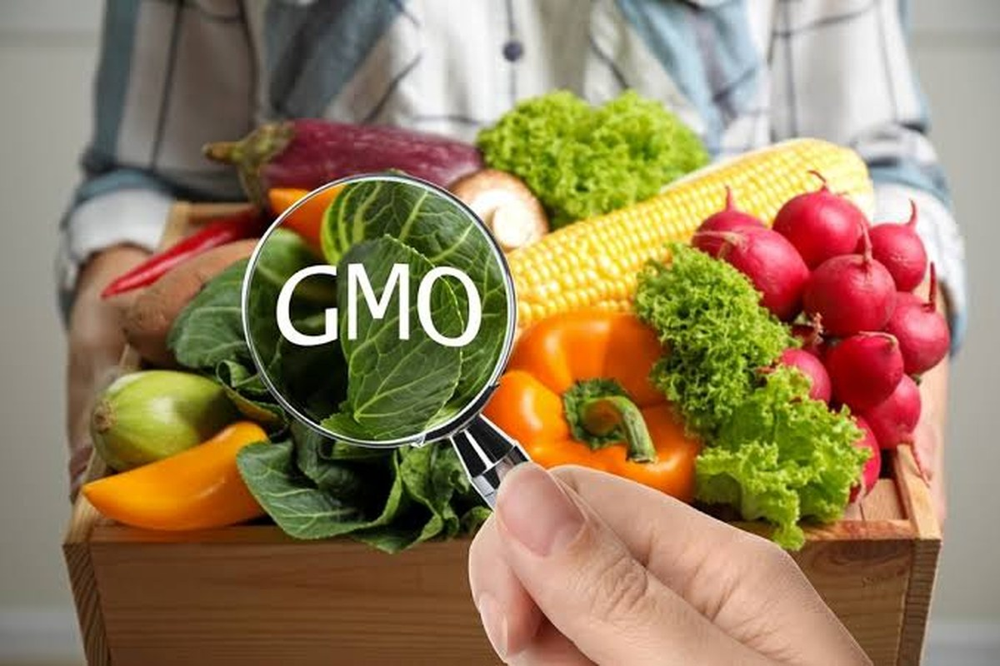
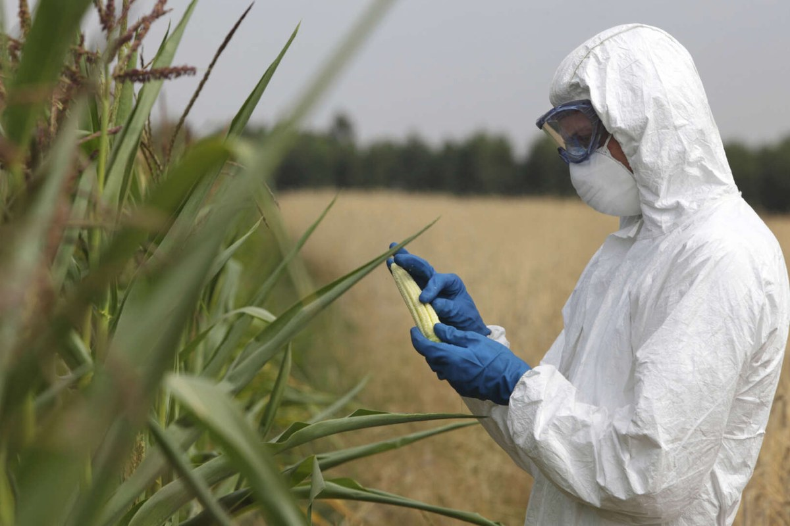

What Are GMOs? Understanding Genetic Modification
Learn the science behind genetic modification, how it's different from traditional breeding, and why it matters.
Read More →A research-based exploration of genetic modification, from laboratory to plate to public policy
Understand what GMOs are, how they work, and what decades of research tell us about their impacts.
Explore the complex ethical questions: choice, responsibility, fairness, and the role of science in society.
Examine how GMOs affect farmers, consumers, food security, and communities around the world.
What does the research discuss about the health effects of consuming GMO foods?
Explore health evidence →What ethical questions surround genetic modification, labeling, patents, and public participation?
Explore ethical issues →How can we understand GMO adoption's social implications and consider benefits alongside concerns?
Explore societal impacts →The paper also asks how to develop a balanced understanding of GMOs. Use the case studies, glossary, and references to explore different angles.
Genetically modified organisms represent one of the most consequential scientific developments of the 21st century. They promise solutions to hunger, disease, and environmental challenges—yet spark passionate debate about ethics, safety, and our right to know what we eat. This article explores why the conversation about GMOs matters, what the evidence shows, and what questions we should be asking.
Read Full ArticleLearn the science behind genetic modification, how it's different from traditional breeding, and why it matters.
Read More →
What does scientific research actually show about GMO food safety? A review of the evidence and ongoing questions.
Read More →
Explore the documented advantages of GMO technology: higher yields, reduced pesticide use, and potential health applications.
Read More →Major scientific organizations including the WHO, FDA, and American Medical Association have reviewed decades of research. Understand what the evidence shows, what remains debated, and what your body deserves to know.
Explore Health SectionBeyond "safe" or "unsafe," GMOs raise profound questions: Do consumers have the right to know? What do scientists owe society? How do we balance innovation with precaution? Explore multiple perspectives on these complex issues.
Explore Ethics SectionFrom the farmer's field to your dinner table, GMO technology affects food systems, economies, and communities. Discover real-world impacts and the ongoing debates about access, regulation, and fairness.
Explore Society SectionTake our interactive quiz and see what you know about genetic modification, health, ethics, and society. Get instant feedback and learn something new.
⏱️ 5-10 minutes
Start Quiz NowAsk. Learn. Understand.
GMOs are part of our global food system. Understanding them—the science, the ethics, the impacts—empowers you to make informed choices about what you eat and what you support.
GeneSense is built by dedicated researchers exploring the intersection of science, ethics, and society.
This educational website is the result of rigorous STS research on "Ethical Implications of GMOs to Human Health and Society."
Meet the full team, explore our methodology, and learn about the sources behind our content.
About Our Team